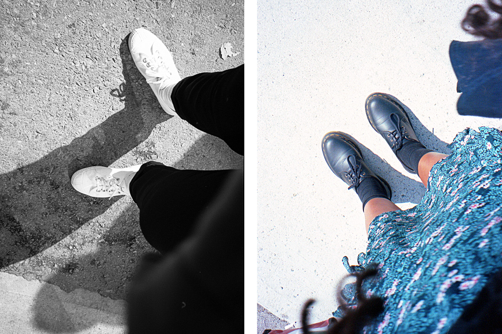

TWENTY NINETEEN IN PHOTOS
10, NOVEMBER 2019

Reviewing how I consume, especially my wardrobe. These outfits, hit the mark just a bit.
10, NOVEMBER 2019
Reviewing how I consume, especially my wardrobe. These outfits, hit the mark just a bit.
29, October 2019
The Lonely Summer explores the loneliness of modernity in the context of the suburban life. This ongoing project, shot on film, is also an examination of my experience with loneliness and my will find a peace. Without disappearing in it.
06, August 2019
It's been a summer of living, less over-thinking. It's been a summer of heat-waves, where the city is looking her absolute best, dressed in yellow light.
There is something in the air that feels earned, the impossible winter, the incessant doubts. And now, we are free to roam the city in mini dresses, holding hands at 30 minutes to midnight, knees wobbling in high heels, deliriously content.
22, August 2018
There is a sadness within:
ripe, soft and, steady.
Every now and then, expanding
it consumes me whole.
Body and mind. I tremble.
Certain, as I turn this corner,
that I will run into you.
Ever tender, steady, and trembling.
11, June 2018
In these weird times we live in, I have been wrestling with the idea of that travelling is undoubtedly a luxury sport for the privileged. It's an uncomfortable truth for me, but it is unavoidable. Our planet has already been explored and conquered by so-called, progress. There is nothing left to be discovered.
There is a whole group of people who don't travel, they flee. They don't get to stay in $5,000 per day stays at the fanciest of hotels designed by the fanciest of architects. There are no selfies in front of the Trevi Fountain as they leisurely walk to find a local lunch spot. And so, I feel quite uncomfortable when confronted with perfectly colour-graded social media images of the trendiest, most instagrammable of locales. It's not wrong or wholly immoral, it just feels excessive and wasteful.
Every once in a while, I too get to exercise that privilege and set off into the world. To be fully transparent, my dream part-time job is travel the world over and take photographs (I say part-time because, there is a limit to everything, even the good things).
Years ago I came across the idea of slow travel from the books The Idle Traveller by Dan Kieran and A Fortune Teller Told Me by Tiziano Terzani. Both of these books look at travel as a journey, that should be done more meaningfully and slowly. Dan Kieran, in particular, talks about how we rarely travel anywhere, a lot of us simply arrive. We trudge though identical looking airports, to watch the same familiar movies on our flights, hail a cab into our familiar hotels where they serve the same, familiar foods. We simply arrive instead of experiencing a journey, whereby we immerse our bodies and minds deep into a voyage.
These types of prescriptions, the championing of slow travel for me feels more ethical, and quite frankly, more unique. I try to base myself in one place and seek to become part of place, unimposing and almost invisible. I want to weave myself into that place. I want to have memories that are not repeatable and entirely mine. I want to have a relationship with that place and that time specifically. If other tourists ask me for directions or the customs officer assumes I am back home for a visit, then I have succeeded.